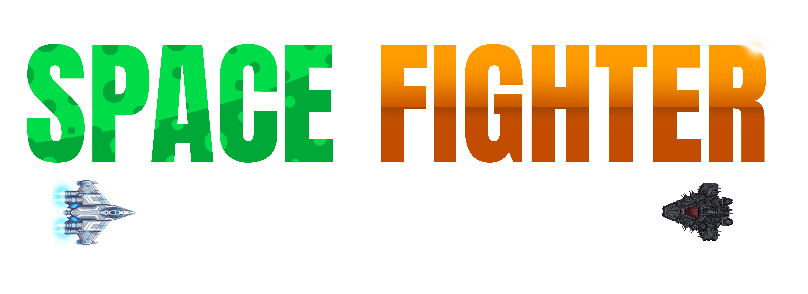

Vampire Survivors meets bullet hell — in space. A top-down bullet-heaven roguelite where every run is a new build. Solo-dev project launching June 8, 2026 inside Steam Bullet Fest 2026.
01 — Trailer
Watch the trailer
02 — Factsheet
At a glance
- Title
- SPACEFIGHTER - The Bullet Hell
- Developer
- Michał JARO Jarosiński (solo)
- Publisher
- Michał JARO Jarosiński (self-published)
- Based in
- Wrocław, Poland
- Release date
- June 8, 2026 — inside Steam Bullet Fest 2026 (June 8–15)
- Platforms
- Windows (Steam)
- Genres
- Bullet Heaven · Roguelite · Top-Down Shooter · Survivors-like
- Price
- $2.99 USD (official launch price)
- Languages
- English (interface + audio) · Store page in EN, 简体中文, Русский, Deutsch, 日本語, Português-BR, Español-LatAm, Français, Polski
- Engine
- Kotlin + LibGDX
- Length
- 8–15h base game, hundreds of hours for completionists
- Steam page
- store.steampowered.com/app/4451950 ↗
- Press contact
- support.spacefighter@gmail.com
03 — Description
Three lengths, ready to paste
SPACEFIGHTER is a top-down bullet-heaven roguelite where every run is a new build. Stack three weapon trees into broken synergies, fight bosses with real mechanics, and survive the chaos. Solo-dev project launching June 8 on Steam — right inside Steam Bullet Fest 2026.
SPACEFIGHTER - The Bullet Hell is a top-down auto-shooter survival game launching June 8, 2026, on Steam — directly inside Steam Bullet Fest 2026. The game blends bullet-heaven structure (Vampire Survivors, Brotato) with shooter craft (real boss mechanics, weapon synergies, pilot identity). Players pilot a 2D starship and build their arsenal across three branching weapon trees — ballistic, explosive, and energy — fusing them into cross-tree synergies that break the game by minute 12 (if you choose well). Bosses arrive with telegraphed patterns, weak points, and phase transitions. Meta-progression unlocks new ships, branches, and modifiers across deaths. The game is built solo by Michał JARO Jarosiński (Wrocław, Poland) using a modern AI-assisted development workflow — Claude Code for the codebase, AI image tools for a portion of visual assets, with creative direction, balancing, and integration owned by the developer. Full AI disclosure is on the Steam page. Launch coincides with Steam Bullet Fest 2026 (June 8–15) and the Steam Summer Sale (June 25–July 9). Official launch price: $2.99 USD.
When Vampire Survivors showed up in 2022, one dev with a tiny engine kicked off a whole genre. Three years later, "bullet heaven" is one of the most copied formats on Steam — and most copies miss what made the original click: the meta-loop, the build identity, the feeling that you found the synergy. SPACEFIGHTER - The Bullet Hell is one solo dev's answer to "what should a bullet heaven feel like in 2026?" Pilot a 2D starship, choose from a roster of ships with distinct kits, and grow your arsenal across three weapon trees — ballistic, explosive, and energy. Each tree has its own scaling identity: ballistic rewards precision and consecutive hits, explosive cranks chain detonations and area control, energy is the synergy-builder with beams, lock-on, and regen tools. The fun is in the cross-tree combinations — 5 explosive plus 2 energy turns into chain detonations on energy crit; 4 ballistic plus 3 explosive turns into piercing rounds that detonate at max range. By minute 12 of a good run, the screen is unreadable and you're a god. Where many survivors-likes stumble is the boss design. SPACEFIGHTER answers with bosses that have real kits: telegraphed wind-ups, weak points, phase transitions, patterns to learn. The first kill feels earned. The first wipe teaches something. Death is data — and meta-progression unlocks new ships, new branches, new starting modifiers each time. The game is built by Michał JARO Jarosiński, a solo developer from Wrocław, Poland, using a modern AI-assisted workflow. Claude Code (Anthropic) handles the codebase under his direction. AI image tools cover a portion of visual assets, with the developer doing direction, editing, balancing, audio, and final integration. The Steam page has full AI disclosure. It's part of an emerging movement of solo developers shipping at content scale that would have required full studios five years ago — and Jarosiński is openly documenting the workflow because, as he puts it, "transparency is the only way this works long-term." SPACEFIGHTER launches June 8, 2026 — squarely inside Steam Bullet Fest 2026 (June 8–15), Valve's first dedicated showcase for the bullet hell / bullet heaven genre. A second push lands during Steam Summer Sale (June 25 – July 9). Official launch price: $2.99 USD. For fans of Vampire Survivors, Brotato, Halls of Torment, and 20 Minutes Till Dawn — but with bosses that actually fight back.
04 — Store description
Localized store copy
Short description (≤ 300 chars)
Long description (Steam-ready)
05 — Quotes
Developer quotes
I built the Vampire Survivors I'd want to play in 2026 — with bosses that actually fight back.
Solo dev plus modern AI-assisted workflow is the future of indie content scale. I'm not hiding the tools — they let me ship things one person couldn't ship five years ago.
Bullet heaven is the most exciting genre on Steam in 2026, and survivors-like fans deserve more than HP-sponge bosses.
06 — Screenshots
Gallery
Click any screenshot to view full-size · all images are high-resolution, free to use for editorial coverage with credit to Michał JARO Jarosiński.
07 — Assets
Logos & capsule art
{kind=link}
{kind=link}
{kind=link}
{kind=link}
08 — Press contact
Get in touch
Wrocław, Poland · solo indie
Follow / connect